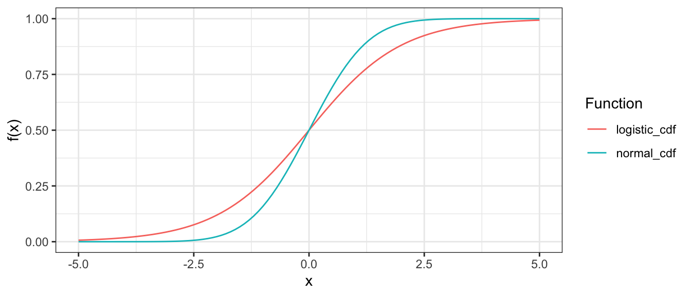

pnorm(2 / sqrt(1.81))[1] 0.9314382Sie haben in der Vorlesung das multidimensionale forced-choice (MFC) Format und das Thurstonian IRT Modell kennengelernt.
Im Folgenden sehen Sie die Datenmatrix eines forced-choice Tests mit zwei multidimensionalen Triplets.
\[\begin{equation} \mathbf{U} = \begin{bmatrix} 1 & 1 & 0 & 0 & 1 & 1 \\ 1 & 0 & 0 & 0 & 0 & 0 \\ 0 & 0 & 1 & 1 & 0 & 0\\ \end{bmatrix} \end{equation}\]
Was bedeuten jeweils die Zeilen und Spalten der Datenmatrix?
Jede Zeile enthält die Antworten einer Person.
Jede Spalte entspricht einem binären Paarvergleich.
In welche Reihenfolge hat Person \(3\) die Items von Triplet \(2\) sortiert?
Die Spalten entsprechen von links nach rechts den folgenden Paarvergleichen:
Triplet 1
Triplet 2
Um herauszufinden, in welche Reihenfolge Person \(3\) die Items von Triplet \(2\) sortiert hat, muss man also die Matrixeinträge in Zeile \(3\) und Spalten \(4\)-\(6\) betrachten.
Es sind \(u_{34} = 1\), \(u_{35} = 0\), und \(u_{36} = 0\) die beobachteten Wert von Person \(3\) auf Triplet \(2\). Die Person muss die Items des Blocks also in die Reihenfolge \(312\) gebracht haben.
Eine vierte Person hat die beiden Triplets jeweils in die Reihenfolgen \(132\) und \(312\) sortiert. Ergänzen Sie die vierte Zeile der Datenmatrix.
Triplet 1:
Die Rangfolge ist \(132\).
Es wurde Item 1 über Item 2 bevorzugt (1).
Es wurde Item 1 über Item 3 bevorzugt (1).
Es wurde nicht Item 3 über Item 2 bevorzugt (0).
Triplet 2:
Die Rangfolge ist \(312\).
Es wurde Item 1 über Item 2 bevorzugt (1).
Es wurde nicht Item 1 über Item 3 bevorzugt (0).
Es wurde nicht Item 2 über Item 3 bevorzugt (0).
Die ergänzte Matrix ist also
\[\begin{equation} \mathbf{U} = \begin{bmatrix} 1 & 1 & 0 & 0 & 1 & 1 \\ 1 & 0 & 0 & 0 & 0 & 0 \\ 0 & 0 & 1 & 1 & 0 & 0 \\ 1 & 1 & 0 & 1 & 0 & 0 \end{bmatrix} \end{equation}\]
Warum ist die Auswertung von forced-choice Daten mit Hilfe der Klassischen Testtheorie suboptimal?
Die resultierenden Summenscores sind ipsativ.
Eine der Klassichen Testtheorie überlegene Auswertungsmethode für MFC Testantworten ist die Auswertung mit Hilfe spezialisierter Item Response Modelle. In der Vorlesung haben Sie das Thurstonian IRT Modell kennengelernt.
Aus dem Thurstonian IRT Modell lassen sich blockweise abhängige Item Characteristic Surface Functions (ICSs) herleiten. Suchen Sie die Formel für die ICS des Thurstonian IRT Modells in der Formelsammlung.
Bedingte Wahrscheinlichkeit, Item \(i\) gegenüber Item \(k\) zu bevorzugen:
\[\begin{equation} P_l(y_l = 1 | \theta_a, \theta_b) = \Phi \Big( \frac{\mu_i - \mu_k + \lambda_i \theta_a - \lambda_k \theta_b}{\sqrt{\psi^2_i + \psi^2_k}} \Big) \end{equation}\]
Die Notation der Vorlesung weicht bei diesem Modell von den vorherigen IRT-Modellen ab.
1. Indices
Was bedeuten hier die Indices \(l\), \(a\), \(b\), \(i\), und \(k\)?
2. Daten
Wie steht \(y_l\) mit der bereits etablierten Datenmatrix \(\mathbf{U}\) im Zusammenhang?
3. Parameter
Was bedeuten \(\theta_a\), \(\theta_b\), \(\mu_i\), \(\mu_k\), \(\lambda_i\), \(\lambda_k\), \(\psi_i\), und \(\psi_k\)?
\(l\): Paarvergleich
\(a\): Erster Trait
\(b\): Zweiter Trait
\(i\): Erstes Item
\(k\): Zweites Item
Das \(l\) kodiert die Spalte der Datenmatrix. Es gibt keinen Personenparameter. Es geht also um eine beliebige Person.
\(\theta_a\): Traitwert auf dem ersten Trait (gemessen durch Item \(i\))
\(\theta_b\): Traitwert auf dem zweiten Trait (gemessen durch Item \(k\))
\(\mu_i\): Mittelwertsparameter von Item \(i\)
\(\mu_k\): Mittelwertsparameter von Item \(k\)
\(\lambda_i\): Faktorladung von Item \(i\) auf Trait \(a\)
\(\lambda_k\): Faktorladung von Item \(k\) auf Trait \(b\)
\(\psi_i\): Residual-Standardabweichung von Item \(i\)
\(\psi_k\): Residual-Standardabweichung von Item \(k\)
Was bedeutet die Wahrscheinlichkeit \(P(y_2 = 1 | \theta_a, \theta_b)\) inhaltlich?
Die Wahrscheinlichkeit, dass eine Person mit den Traitwerten \(\theta_a\) und \(\theta_b\) auf dem zweiten Paarvergleich das erste Item von beiden bevorzugt.
Eine Person mit \(\theta_a = 0.5\) und \(\theta_b = 0\) bearbeitet ein MFC Paar. Die Itemparameter des MFC Paars sind \(\mu_j = 0.5\), \(\mu_k = -1\), \(\lambda_j = 1\), \(\lambda_k = -0.9\), \(\psi_j = 1\), und \(\psi_k = 0.9\). Berechnen Sie die Wahrscheinlichkeit, dass die Person Item \(j\) gegenüber Item \(k\) bevorzugt.
Gegeben:
\(\theta_a = 0.5\), \(\theta_b = 0\)
\(\mu_j = 0.5\), \(\mu_k = -1\)
\(\lambda_j = 1\), \(\lambda_k = -0.9\)
\(\psi_j = 1\), \(\psi_k = 0.9\)
Gesucht:
Die Wahrscheinlichkeit, dass die Person Item \(j\) gegenüber Item \(k\) bevorzugt.
\[\begin{equation} P(y_l = 1 | \theta_a, \theta_b) \end{equation}\]
\[\begin{equation} = \Phi( \frac{ \mu_j - \mu_k + \lambda_j \theta_a - \lambda_k \theta_b }{ \sqrt{\psi_j^2 + \psi_k^2} } ) \end{equation}\] \[\begin{equation} = \Phi( \frac{ 0.5 + 1 + 0.5 }{ \sqrt{1^2 + 0.9^2} } ) \end{equation}\] \[\begin{equation} = \Phi(\frac{2}{\sqrt{1.81}}) \end{equation}\] \[\begin{equation} \approx .93 \end{equation}\]
\(\Phi\) steht hier für die kumulative Dichteverteilung (CDF) der Standardnormalverteilung. Die Vorschrift von \(\Phi\) ist
\[\begin{equation} \Phi(x) = \frac{1}{\sqrt{2 \pi}} \int_{-\infty}^{x} e^{-t^2/2} dt \end{equation}\]
Das Integral lässt sich nur näherungsweise berechnen. In R ist diese Berechnung mit der Funktion pnorm bereits implementiert.
Sie können das Ergebnis auch mit teachIRT::p_tirt() überprüfen. Bedenken Sie dabei aber, dass die Funktion Residualvarianzen erwartet. Sie müssen also \(\psi_j^2\) und \(\psi_k^2\) übergeben.
In der letzten Aufgabe sind Sie der CDF der Standardnormalverteilung, \(\Phi\), begegnet. Die Funktion \(\Phi\) erfüllt in IRT-Modellen i.d.R. den gleichen Zweck wie die logistische Funktion (siehe grundlegende Rechenkompetenzen). Das heißt \(\Phi\) bildet eine reelle Zahl auf eine Wahrscheinlichkeit ab. Diesen Zusammenhang kann man formal auch als \(\Phi: \mathbb{R} \rightarrow [0, 1]\) aufschreiben.
Im folgenden Plot sehen Sie die Graphen beider Funktionen im Vergleich.

Modelle, die die logistische Funktion als sog. Link-Funktion verwenden, kann man auch als Logit-Modelle bezeichnen. Modelle, die die CDF der Standardnormalverteilung als Link-Funktion verwenden, kann man als Probit-Modelle bezeichnen.
Sie können die ICS des Thurstonian IRT Modells mit dem teachIRT Paket plotten. Stellen Sie zunächst theoretische Überlegungen darüber an, wie die ICSs des Thurstonian IRT Modells vermutlich aussehen. Überprüfen Sie dann Ihre Vermutung mit dem Befehl
Entspricht das Ergebnis Ihren Erwartungen?
Lesen Sie von der geplotteten ICS ab, wie wahrscheinlich es ist, Item \(j\) gegenüber Item \(k\) zu bevorzugen, wenn eine Person die Traitwerte \(\theta_a = 4\) und \(\theta_b = -4\) aufweist.